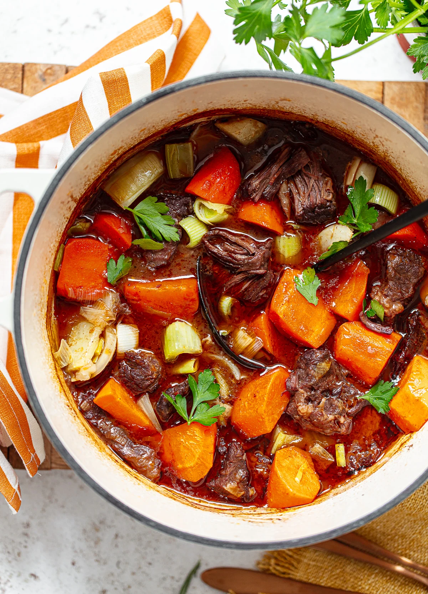

HOME
Beef Stew Recipe

Ingredients
- 2 lbs beef chuck, cut into cubes
- 4 cups beef broth
- 3 carrots, sliced
- 1 onion, chopped
- 2 garlic cloves, minced
- 2 tbsp tomato paste
- 1 tsp dried thyme
- 1 bay leaf
- Salt and pepper to taste
- 2 tbsp olive oil
Instructions
- Heat olive oil in a large pot over medium heat.
- Brown beef cubes on all sides. Remove and set aside.
- In the same pot, sauté onion and garlic until soft.
- Add tomato paste, thyme, salt, and pepper. Stir
- Return beef to the pot. Add broth, carrots, potatoes, and bay leaf
- Bring to a boil, then reduce heat to low. Cover and simmer for 1.5 to 2 hours, until beef is tender.
- Remove bay leaf before serving.
Enjoy your beef stew!